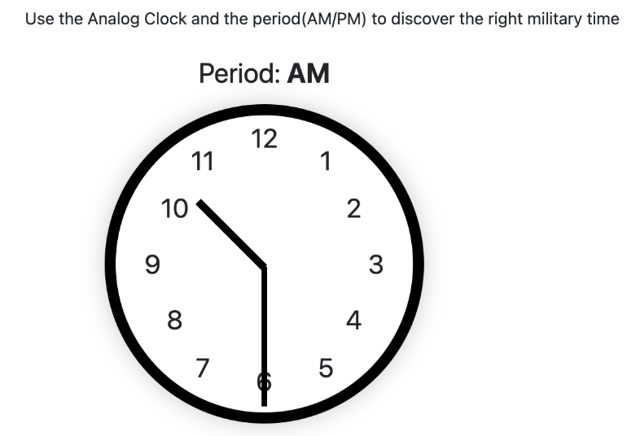
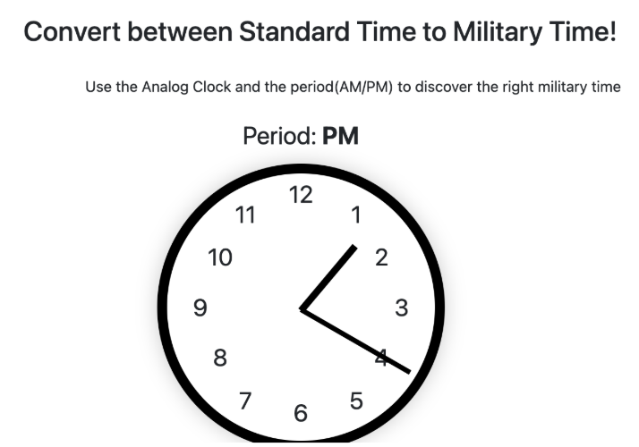

Standard Time To Military Time
In most medical settings, military time (24‑hour clock) is used to mitigate confusion around AM and PM. Unlike standard time, military time counts all 24 hours of the day continuously from 00:00 (midnight) to 23:59 (11:59 PM). As a nurse, you'll need to quickly convert standard time into military time and from military time into standard time for many core roles.
Let’s go through the basics! For the purpose of time conversions, we will always be dealing with EST (Eastern Standard Time). This will make the rules fairly straightforward to understand and comprehend than in other time zones.
Tip #1: No matter what the hour sign is, the minutes sign will always say the same. Make sure to append the minutes to whatever the correct hour value is.
Tip #2: Military time always contains four digits, with no AM or PM.
Tip #3: 12:00 PM stays 12:00 and 12:00 AM becomes 00:00. These two edge cases are important to memorize.
Case 1: AM Times (12:00 AM to 11:59 AM)
- Keep the hour the same, except for 12 AM which becomes 00:00
- If the hour is a single digit, add the leading zero
Examples:
- 7:30 AM → 07:30
- 11:45 AM → 11:45
- 12:00 AM → 00:00
Case 2: PM Times (12:00 PM to 11:59 PM)
- Add 12 to the hour, except for 12 PM which stays 12:00
Examples:
- 2:00 PM → 14:00
- 6:15 PM → 18:15
- 12:00 PM → 12:00
Now, two worked examples:
-
09:19 AM → ?
AM so Case 1: hour stays “09”. Final: 09:19.
-
06:10 PM → ?
PM so Case 2: 6 + 12 = 18. Final: 18:10.
Military Time to Standard Time
Converting military time back to standard time is similar—just remember the two edge cases.
Tip #1: Minutes never change.
Tip #2: 00:00 becomes 12:00 AM; 12:00 stays 12:00 PM.
Case 1: 00:00–11:59
- Keep the hour the same unless it’s 00 (then becomes 12)
- Add AM
Examples:
- 00:00 → 12:00 AM
- 07:30 → 7:30 AM
- 11:45 → 11:45 AM
Case 2: 12:00–23:59
- Subtract 12 from the hour
- Add PM
Examples:
- 14:00 → 2:00 PM
- 18:15 → 6:15 PM
- 23:50 → 11:50 PM
Worked examples:
-
23:34 → ?
23 > 12 → PM; 23 − 12 = 11. Final: 11:34 PM.
-
07:41 → ?
07 < 12 → AM. Final: 07:41 AM.
Analog Clock Conversions
While digital clocks are common in most hospitals, reading an analog clock quickly remains valuable. Let’s simplify it.

Part #1
The shorter hand is hours; the longer hand is minutes. If the hour hand sits between numbers, read the one it just passed.
- Tip: It only “becomes” the next hour once it fully passes it.
Hours
If the hour hand is between 11 and 12 but closer to 11, the hour is 11.
Tip #1: The hour hand always points to the current hour.
Tip #2: It only changes to the next hour after passing it.
Minutes
Each number is a 5‑minute increment; count individual ticks if between numbers.
- 1 → 5m, 2 → 10m, …, 12 → 00m
Example Problems:
-

07:41 → ?
Hour hand just past 7 → 7; minute hand at 8 → 40; AM → 07:41 AM.
-

13:20 → ?
Hour hand just past 1 → 1+12=13; minute hand at 4 → 20; PM → 13:20 PM.